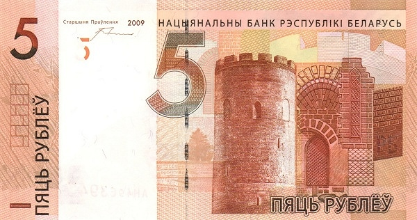
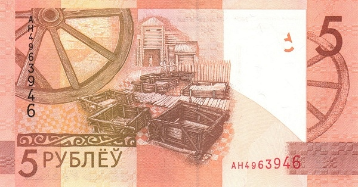

Белоруссия - Белорусский рубль
5 белоруссих рублей
 Лицевая сторона - Каменецкая башня (Каменец, Брестская область)
Обратная сторона - Коллаж на тему первых славянских поселений
10 белоруссих рублей

Лицевая сторона - Спасо-Преображенская церковь (Полоцк, Витебская область)
Обратная сторона - Коллаж на тему просветительства и книгопечатания
20 белоруссих рублей
Лицевая сторона - Дворец Румянцевых-Паскевичей (Гомель, Гомельская область)
Обратная сторона - Коллаж на тему духовности
50 белоруссих рублей
Лицевая сторона - Мирский замок (Мир, Гродненская область)
Обратная сторона - Коллаж на тему искусства
100 белоруссих рублей
Лицевая сторона - Несвижский замок (Несвиж, Минская область)
Обратная сторона - Коллаж на тему театра и народных праздников
200 белоруссих рублей
Лицевая сторона - Могилёвский областной художественный музей им. Масленникова (Могилёв, Могилёвская область)
Обратная сторона - Коллаж на тему ремесла и градостроительства
500 белоруссих рублей
Лицевая сторона - Национальная библиотека Республики Беларусь (Минск)
Обратная сторона - Коллаж на тему литературы